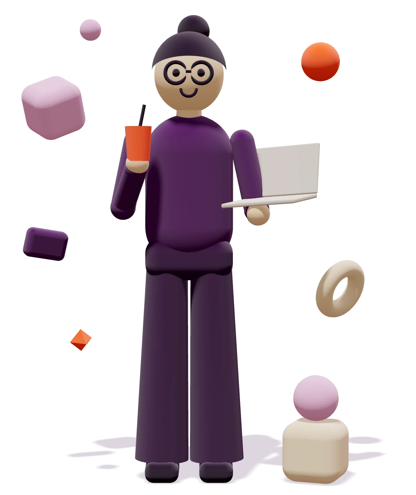

One character. Many possibilities.
Senior Designer Brand, Product & Creative Systems
18 years of shaping brands, interfaces, and the visual systems that keep them consistent, still very hands-on.

Selected Work


03 / About
A little about me
Biography placeholder
This space will introduce my background, how I work, and what I am exploring next.
The final biography and a dedicated About page will be developed later.
04 / Contact
Let’s start a conversation.
Contact copy placeholder
Email and professional links will be added here once the contact content is confirmed.